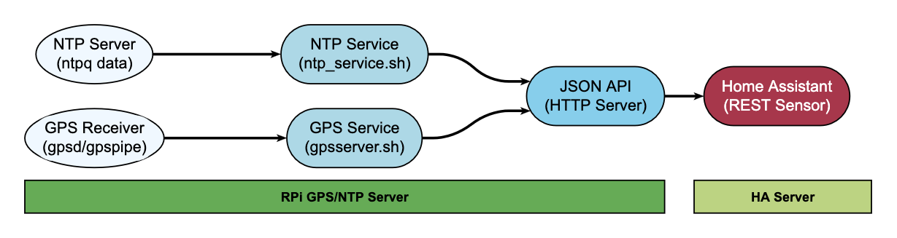
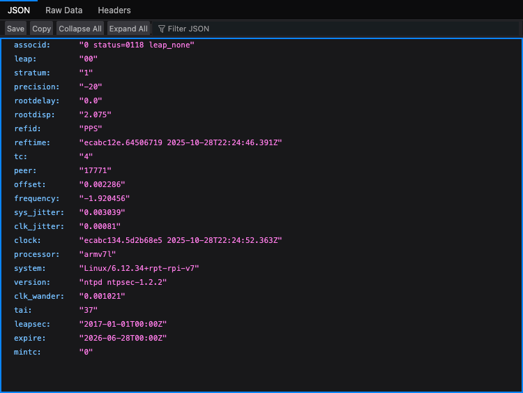
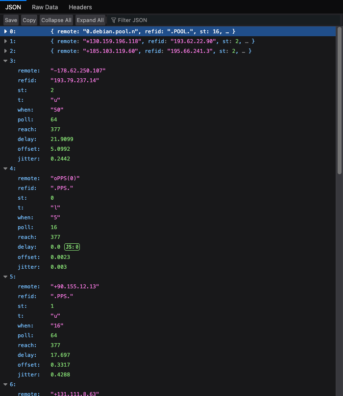
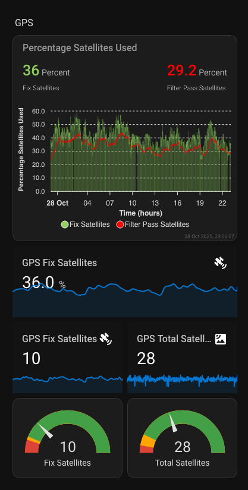
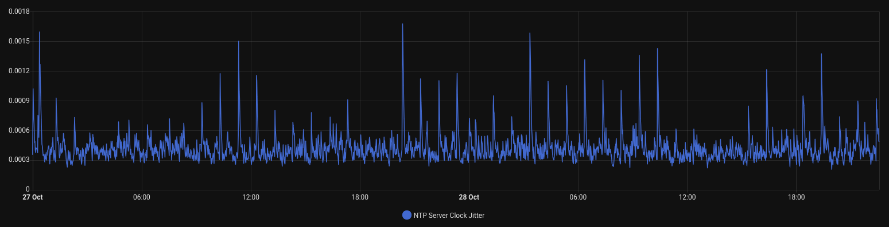
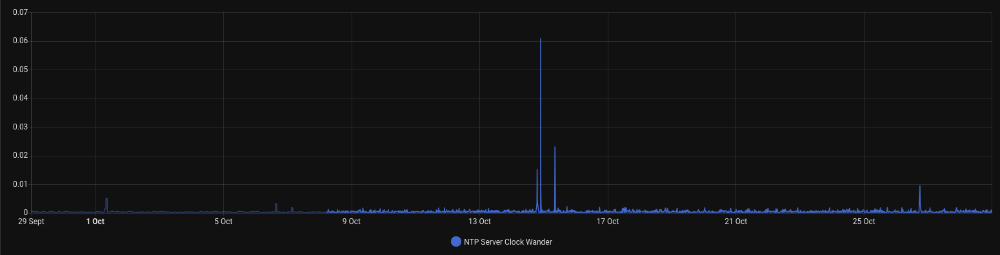

NTP & GPS Home Bridge


Reads NTP and GPS status from a Raspberry Pi and serves it as JSON over HTTP, so Home Assistant can pick it up with REST sensors.
Built for the case where you already run a GPS-disciplined NTP server at home and want to see whether it is actually behaving: stratum, jitter, which peers are answering, how many satellites the receiver can see.
Architecture

Requirements
A Raspberry Pi running a Debian-based OS, a GPS receiver on a serial or USB port, and root access. The installer pulls in ntp (or chrony), gpsd, jq, Python 3 and a web server if you do not already have one.
Installation

Run this on the Pi that has the GPS receiver attached, not on your Home Assistant host.
Download the installer and read it before running it. It runs as root and installs packages:
curl -fsSLO https://raw.githubusercontent.com/ToledoEM/GPSNTPHomeBridge/main/gpsntphomebridge.sh
less gpsntphomebridge.sh
sudo bash gpsntphomebridge.shIf you have already cloned the repository, run it directly:
sudo ./gpsntphomebridge.shIt installs the dependencies, copies the collection scripts to /opt/ntphomebridge/, sets up two systemd services, and starts them. NTP data refreshes every 60 seconds, GPS every 15.
The installer clones the repository itself when it needs the collection scripts, so downloading the single file is enough to start.
Installer options
| Flag | Default | What it does |
|---|---|---|
--ntp-server ntpd\|chronyd |
ntpd |
Which NTP daemon to report on. ntp and chrony work too |
--web-root DIR |
/var/www/html |
Where the JSON files are published. Point it at a directory your web server already serves; the installer does not change the web server config |
--skip-gpsd |
off | Leave gpsd alone, for a setup where it is already configured. gpsd is still installed if it is missing |
-h, --help |
Print usage |
sudo ./gpsntphomebridge.sh --ntp-server chronydThe choice is saved in /etc/ntphomebridge/bridge.env and in the systemd unit, so run the installer again to switch.
chrony
With --ntp-server chronyd the endpoints keep the same names and fields, so the integration and REST sensors work unchanged. chrony has no equivalent for status, status_flags or precision, so those stay empty.
On Debian and Raspberry Pi OS, chrony and ntp conflict: installing one removes the other.
GPS device
The installer enables gpsd but leaves the device to you, since it depends on your hardware. Set it in /etc/default/gpsd:
DEVICES="/dev/ttyAMA0" # or /dev/ttyUSB0, /dev/ttyACM0, ...
GPSD_OPTIONS="-n"Restart with sudo systemctl restart gpsd. Check the receiver is talking before you expect anything on the GPS endpoint. gpspipe comes from the gpsd-clients package, which the installer does not pull in:
sudo apt install gpsd-clients
gpspipe -w -n 10Endpoints
| Endpoint | Contents |
|---|---|
http://<server_ip>/ntpq_crv.json |
Stratum, frequency, jitter, wander, precision, offset and the decoded status flags |
http://<server_ip>/ntpq_pn.json |
One entry per peer: address, tally code, stratum, reach, delay, offset, jitter |
http://<server_ip>/gps.json |
Satellite counts, per-constellation breakdown, average signal strength, DOP values and the raw satellite list |
Anyone who can reach the Pi can read these. Keep them on a trusted network, and put a reverse proxy with auth in front if you need more than that.


Home Assistant
Two ways to get the data in. The custom integration sets everything up from the UI and is the easier option. The REST sensor YAML below still works if you would rather configure it by hand.
Custom integration
In HACS, search for GPS & NTP Home Bridge, download it, and restart Home Assistant. Then add it under Settings, Devices & services, Add integration, search for GPS & NTP Home Bridge, and enter the address of the Pi. Home Assistant can run on any device on the network, as long as it can reach the Pi over HTTP.
It creates a device with sensors for stratum, frequency, system and clock jitter, clock wander, offset, precision, the synced peer and peer reachability, plus satellite counts, satellite ratio, average signal strength, HDOP and the fix timestamp. Peer details and the per-constellation breakdown are attached as attributes.
The integration polls at the same rate the services refresh: NTP every 60 seconds, GPS every 15.
REST sensors
Add these to configuration.yaml, then restart Home Assistant. Replace YOUR_SERVER_IP with the address of your Pi.
NTP
sensor:
- platform: rest
name: ntp_server_status
unique_id: ntp_server_status
resource: http://YOUR_SERVER_IP/ntpq_crv.json
value_template: "{{ value_json.stratum }}"
method: GET
verify_ssl: false
timeout: 30
force_update: true
scan_interval: 60
json_attributes:
- stratum
- frequency
- sys_jitter
- clk_jitter
- clk_wander
- precision
- offset
- refid
- status
- status_flagsThe sensor state is the stratum. Everything else lands in attributes. status_flags holds the decoded words from the ntpq status line, such as leap_none, sync_ntp and clock_sync.
GPS
sensor:
- platform: rest
name: gps_server
unique_id: gps_server
resource: http://YOUR_SERVER_IP/gps.json
value_template: "{{ value_json.used_satellites }}"
method: GET
verify_ssl: false
timeout: 30
force_update: true
scan_interval: 30
json_attributes:
- total_satellites
- used_satellites
- satellite_ratio
- avg_signal_strength
- gnss_breakdown
- dop_values
- timestamp
- satellitesThe counts, constellation breakdown and average signal strength arrive precomputed, so read them as attributes instead of recalculating them in a template.
Template sensors
Split the attributes into their own entities if you want to graph them:
template:
- sensor:
- name: "NTP Server Stratum"
state: "{{ state_attr('sensor.ntp_server_status', 'stratum') }}"
unique_id: "ntp_server_stratum"
state_class: measurement
icon: mdi:server-network
- name: "NTP Server Frequency"
state: "{{ state_attr('sensor.ntp_server_status', 'frequency') }}"
unique_id: "ntp_server_frequency"
state_class: measurement
icon: mdi:speedometer
- name: "NTP Server System Jitter"
state: "{{ state_attr('sensor.ntp_server_status', 'sys_jitter') }}"
unique_id: "ntp_server_sys_jitter"
state_class: measurement
icon: mdi:chart-line
- name: "NTP Server Clock Jitter"
state: "{{ state_attr('sensor.ntp_server_status', 'clk_jitter') }}"
unique_id: "ntp_server_clk_jitter"
state_class: measurement
icon: mdi:clock
- name: "NTP Server Clock Wander"
state: "{{ state_attr('sensor.ntp_server_status', 'clk_wander') }}"
unique_id: "ntp_server_clk_wander"
state_class: measurement
icon: mdi:clock-alert
- name: "NTP Server Precision"
state: "{{ state_attr('sensor.ntp_server_status', 'precision') }}"
unique_id: "ntp_server_precision"
state_class: measurement
icon: mdi:target
- name: "used_satellites"
state: "{{ state_attr('sensor.gps_server', 'used_satellites') }}"
unique_id: "used_satellites"
state_class: measurement
icon: mdi:satellite-variant
- name: "total_satellites"
state: "{{ state_attr('sensor.gps_server', 'total_satellites') }}"
unique_id: "total_satellites"
state_class: measurement
icon: mdi:satellite-variant
- name: "signal_strength"
state: "{{ state_attr('sensor.gps_server', 'avg_signal_strength') }}"
unique_id: "signal_strength"
state_class: measurement
unit_of_measurement: dBHz
icon: mdi:signal-variant
- name: "satellite_ratio"
state: "{{ state_attr('sensor.gps_server', 'satellite_ratio') | round(1) }}"
unique_id: "satellite_ratio"
state_class: measurement
unit_of_measurement: "%"
icon: mdi:percent
- name: "glonass_satellites"
state: "{{ (state_attr('sensor.gps_server', 'gnss_breakdown') or {}).get('glonass', 0) }}"
unique_id: "glonass_satellites"
state_class: measurement
icon: mdi:satellite-variant
- name: "gps_hdop"
state: "{{ (state_attr('sensor.gps_server', 'dop_values') or {}).get('hdop', 0) }}"
unique_id: "gps_hdop"
state_class: measurement
icon: mdi:crosshairs-gpsgpsd reports signal strength in dB-Hz, not dBm.
Dashboard
type: entities
title: NTP & GPS Monitoring
entities:
- entity: sensor.ntp_server_stratum
- entity: sensor.ntp_server_clock_jitter
- entity: sensor.used_satellites
- entity: sensor.total_satellites
- entity: sensor.signal_strength
- entity: sensor.gps_hdopThese entity IDs come from the name: values above. Rename a sensor and the card needs the same change.

Reading the numbers
NTP
stratum is how far you sit from a reference clock. A working GPS setup should read 1, meaning the Pi is attached to one directly. 2 or more means it fell back to syncing over the network. 16 means it gave up and is not synchronised at all.
frequency is the correction applied to the local oscillator in parts per million, usually somewhere between -100 and +100. The absolute number matters less than whether it holds still. Steady drift usually turns out to be temperature.
sys_jitter and clk_jitter measure short-term instability in seconds, normally microseconds to milliseconds, and lower is better. The first covers the time source as a whole, the second only the local hardware.

clk_wander tracks stability over longer periods and usually stays under 0.001. Expect it to creep up as an oscillator ages or the room warms.

precision is clock resolution as a power of two. -20 works out to 2^-20 seconds, near enough a microsecond.
reach records whether each of the last eight polls got an answer, served as a decimal number. 255 means all eight landed, 0 means the peer has gone quiet, and anything between means you are dropping responses.
tally is the verdict ntpq reached about each peer: * for the one in use, + for a viable candidate, - for an outlier it threw out, blank for one it is ignoring.
GPS
Every satellite reports PRN as its identifier, el for degrees above the horizon, az for degrees from north, ss for signal strength in dB-Hz, and used for whether it fed into the current fix.
satellite_ratio is the share of visible satellites that made it into the fix. gnss_breakdown splits the count across GPS, GLONASS, Galileo, BeiDou, QZSS, SBAS, IMES and NavIC.
The DOP figures describe how much satellite geometry is hurting accuracy: hdop for horizontal position, vdop for altitude, pdop for the 3D fix, gdop for position and time together. Under 1 is excellent, 1 to 2 is good, 2 to 5 is workable, and past 10 there is not much point trusting it.
License
MIT. See LICENSE.